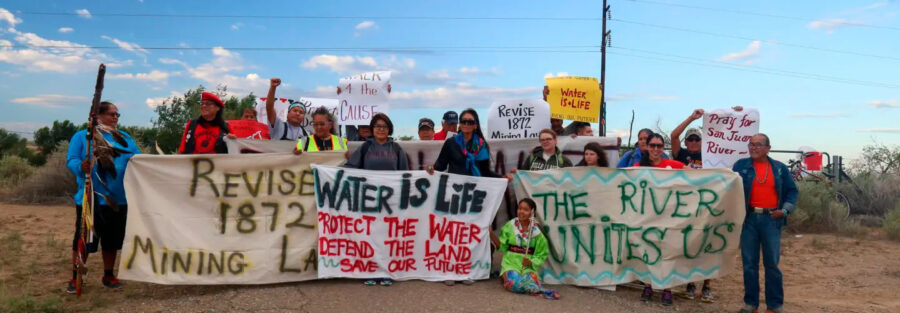

Teresa Montoya’s Tó Łitso (Yellow Water): Ten Years after the Gold King Mine Spill
On August 5, 2015, the rupture of the abandoned Gold King Mine near Silverton, Colorado, released more than three million gallons of toxic wastewater into the Animas River, turning its waters a shocking shade of yellow. In the following year, artist and anthropologist Teresa Montoya (Diné, born 1984) embarked on a road trip from Silverton to Shiprock, New Mexico, retracing the path of the contaminated water and documenting its ongoing cultural, spiritual, and material effects on the Navajo Nation and other Indigenous communities downstream.
Marking the ten-year anniversary of the disaster, The Block Museum of Art partners with Montoya to revisit this journey. Tó Łitso (Yellow Water) explores the enduring consequences of the Gold King Mine spill through photography, sound recordings, water samples, and cartographic data.
Combining documentary photographs with scientific data and poetic reflection, Tó Łitso invites viewers to consider water not only as a life-sustaining resource but also as a conduit for histories, stories, and harm. In doing so, the exhibition challenges extractive frameworks of land use, centering Indigenous knowledge and resilience. Through Montoya’s interdisciplinary practice, Tó Łitso (Yellow Water) offers a powerful meditation on environmental and cultural justice in the Southwest and beyond.
“The 2015 spill had discharged more than three million gallons of acidic mine waste fluid into Cement Creek before joining the Animas River and eventually into the San Juan River, which flows directly across the Navajo Nation. Through my photographic journey, I make explicit the enduring presence of toxicity across multiple landscapes and territories. Sometimes it appears beautiful, other times haunting. The images highlight the relationships that various communities sustain through water/tó despite the occurrence of repeated and enduring contamination from upstream locales. The Gold King Mine Spill shows us this, even in that, which cannot be readily seen.” – Teresa Montoya
Pronounce: Tó Łitso
Teresa Montoya’s Tó Łitso (Yellow Water): Ten Years after the Gold King Mine Spill was curated by Kathleen Bickford Berzock, Associate Director of Curatorial Affairs, and Marisa Cruz Branco (Isleta Pueblo/Portuguese), Terra Foundation Fellow, in collaboration with the artist. It was supported in part by a grant from the Illinois Arts Council. Ahéhee’ (thank you) to Janene Yazzie, John Hosteen, Wade Campbell, and Andrew Curley for Diné language and curatorial guidance.
About Teresa Montoya
Teresa Montoya (Diné) is a photographer, social scientist, and Assistant Professor in the Department of Anthropology at the University of Chicago. Her research and creative practice focus on contemporary problems of environmental governance in relation to historical legacies of land dispossession and resource extraction across the Indigenous Southwest. Her work has been published in the American Journal of Public Health, Anthropology Now, Cultural Anthropology, Journal for the Anthropology of North America, Ecology and Society, Environment and Planning E: Nature and Space, Visual Anthropology Review, and Water International. She has curatorial experience in various institutions, including the Field Museum where she served as a guest curator for Native Truths: Our Voices, Our Stories. She is the founding member of Diné in Focus, a collective dedicated to Diné photojournalism through a Diné lens. Website: https://teresamontoya.squarespace.com/